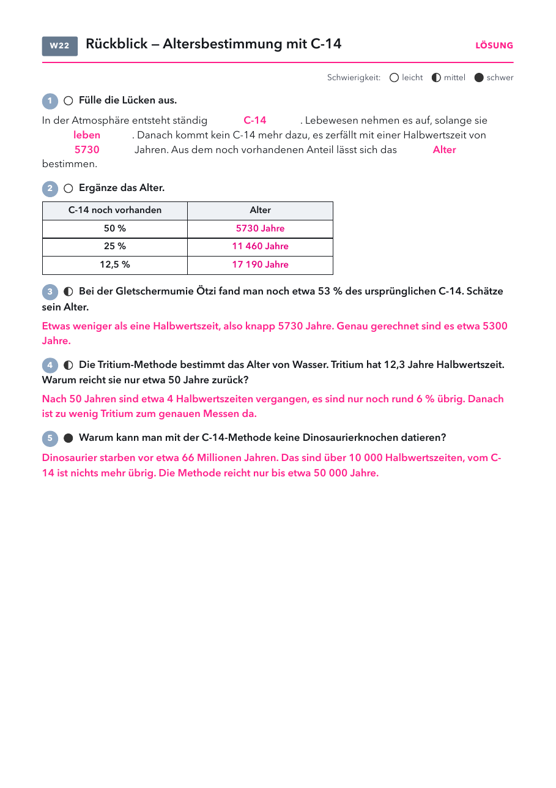

Klasse 10 · Physik · W22 (Woche ab 08.03.2027) · Abschluss Kernphysik
| Material | Anzahl | Hinweis |
|---|---|---|
| nicht nötig | ||
| Material | Anzahl | Hinweis |
|---|---|---|
| nicht nötig | ||

| Fund | Alter | Besonderheit |
|---|---|---|
| Ötzi (Gletschermumie) | etwa 5300 Jahre | starb in der Jungsteinzeit in den Ötztaler Alpen |
| „Roter Franz“ (Moorleiche, Emsland) | etwa 1700 Jahre | Die Haare färbten sich im Moor rot. |
| Turiner Grabtuch | Mittelalter (1260 bis 1390) | 1988 in drei Laboren gemessen |
| Höhlenmalereien der Chauvet-Höhle | über 30 000 Jahre | nahe an der Grenze der Methode |
Lösung: C-14, leben, 5730, Alter. 5730, 11 460, 17 190 Jahre. Ötzi knapp eine Halbwertszeit, etwa 5300 Jahre. Tritium: nach 50 Jahren nur noch etwa 6 %. Dinosaurier: über 10 000 Halbwertszeiten.